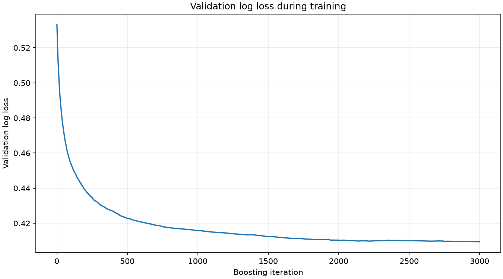
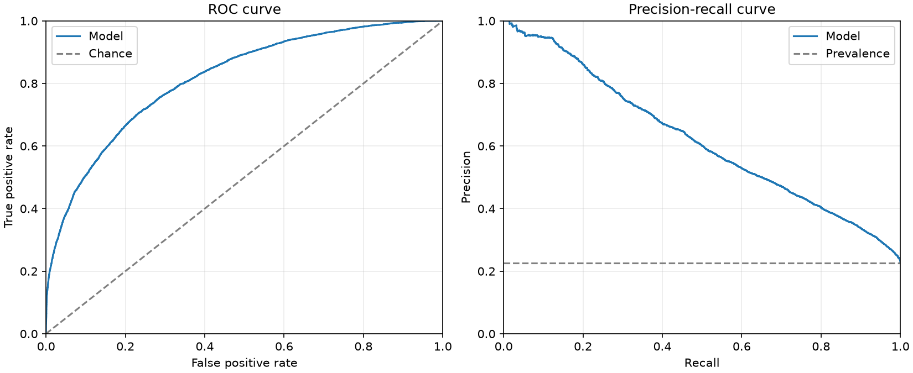
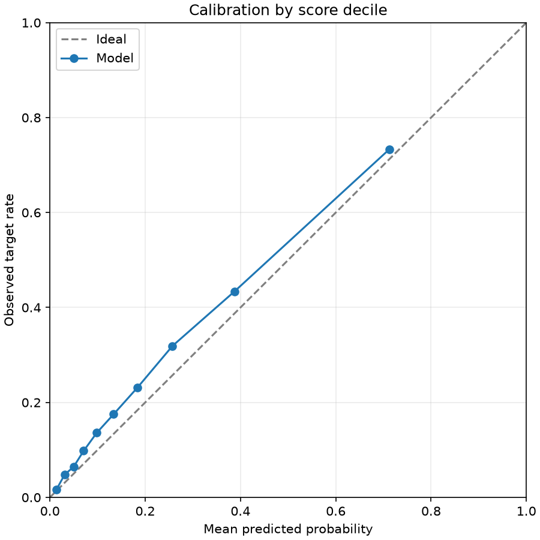
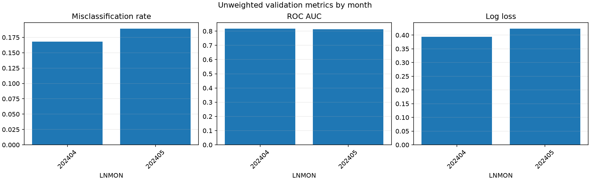
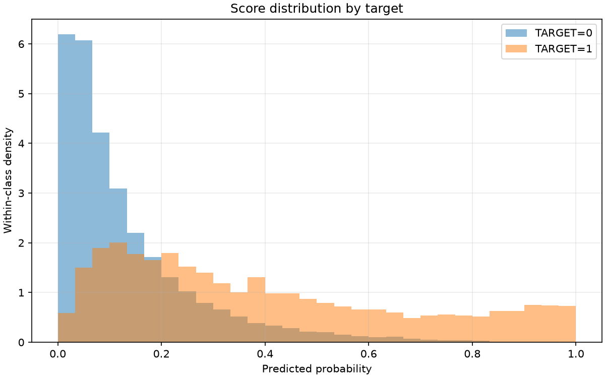

Final validation misclassification rate (overall_unweighted, probability > 0.5): 0.178981
Validation months: 202404, 202405. The training-history figure reflects the model's original training validation protocol. The results describe the supplied undersampled data and are not independent test scores.
| scope | month | rows | target_1_rows | target_1_rate | misclassification_rate | roc_auc | average_precision | log_loss | brier_score |
|---|---|---|---|---|---|---|---|---|---|
| overall_unweighted | all | 28679 | 6470 | 0.22560 | 0.17898 | 0.81600 | 0.62052 | 0.40952 | 0.12933 |
| monthly_unweighted | 202404 | 13966 | 2989 | 0.21402 | 0.16798 | 0.81851 | 0.61449 | 0.39419 | 0.12343 |
| monthly_unweighted | 202405 | 14713 | 3481 | 0.23659 | 0.18942 | 0.81365 | 0.62647 | 0.42407 | 0.13494 |
The first row is the metric recorded during training; the second row scores the selected validation protocol with the same metric.
| evaluation | protocol | months | month_weighted | metric | score |
|---|---|---|---|---|---|
| training_protocol | v1 | 202404,202405 | False | logloss | 0.40952 |
| selected_protocol | v1 | 202404,202405 | False | logloss | 0.40952 |





| decile | rows | weight_sum | mean_probability | observed_target_rate |
|---|---|---|---|---|
| 1 | 2868 | 2868.00000 | 0.01386 | 0.01674 |
| 2 | 2868 | 2868.00000 | 0.03096 | 0.04812 |
| 3 | 2868 | 2868.00000 | 0.04959 | 0.06416 |
| 4 | 2868 | 2868.00000 | 0.07083 | 0.09798 |
| 5 | 2868 | 2868.00000 | 0.09827 | 0.13598 |
| 6 | 2868 | 2868.00000 | 0.13361 | 0.17503 |
| 7 | 2868 | 2868.00000 | 0.18392 | 0.23152 |
| 8 | 2868 | 2868.00000 | 0.25726 | 0.31904 |
| 9 | 2868 | 2868.00000 | 0.38772 | 0.43410 |
| 10 | 2867 | 2867.00000 | 0.71272 | 0.73352 |
The final classification score uses 0.5; other thresholds are diagnostics only.
| threshold | weighted_true_positive | weighted_false_positive | weighted_true_negative | weighted_false_negative | misclassification_rate | precision | recall | specificity | predicted_positive_share |
|---|---|---|---|---|---|---|---|---|---|
| 0.10000 | 5611.00000 | 10005.00000 | 12204.00000 | 859.00000 | 0.37881 | 0.35931 | 0.86723 | 0.54951 | 0.54451 |
| 0.20000 | 4439.00000 | 4816.00000 | 17393.00000 | 2031.00000 | 0.23875 | 0.47963 | 0.68609 | 0.78315 | 0.32271 |
| 0.30000 | 3421.00000 | 2504.00000 | 19705.00000 | 3049.00000 | 0.19363 | 0.57738 | 0.52875 | 0.88725 | 0.20660 |
| 0.40000 | 2667.00000 | 1343.00000 | 20866.00000 | 3803.00000 | 0.17943 | 0.66509 | 0.41221 | 0.93953 | 0.13982 |
| 0.50000 | 2057.00000 | 720.00000 | 21489.00000 | 4413.00000 | 0.17898 | 0.74073 | 0.31793 | 0.96758 | 0.09683 |
| 0.60000 | 1590.00000 | 374.00000 | 21835.00000 | 4880.00000 | 0.18320 | 0.80957 | 0.24575 | 0.98316 | 0.06848 |
| 0.70000 | 1212.00000 | 168.00000 | 22041.00000 | 5258.00000 | 0.18920 | 0.87826 | 0.18733 | 0.99244 | 0.04812 |
| 0.80000 | 861.00000 | 68.00000 | 22141.00000 | 5609.00000 | 0.19795 | 0.92680 | 0.13308 | 0.99694 | 0.03239 |
| 0.90000 | 478.00000 | 23.00000 | 22186.00000 | 5992.00000 | 0.20974 | 0.95409 | 0.07388 | 0.99896 | 0.01747 |